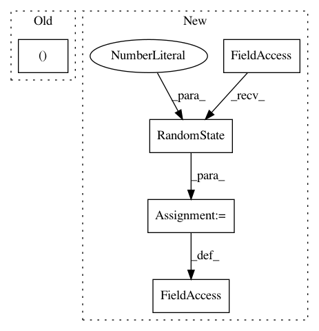

71b1e873e70dca43cd12870d4c0f497015f41970,examples/under-sampling/plot_illustration_tomek_links.py,,,#,41
Before Change
fig, (ax1, ax2) = plt.subplots(1, 2, figsize=(12, 6))
ax_arr = (ax1, ax2)
title_arr = ("Removing only majority samples", "Removing all samples")
for ax, title, sampler in zip(
ax_arr,
title_arr,
[TomekLinks(sampling_strategy="auto"), TomekLinks(sampling_strategy="all")],
After Change
// %%
import numpy as np
rng = np.random.RandomState(18)
X_minority = np.transpose(
[[1.1, 1.3, 1.15, 0.8, 0.55, 2.1], [1.0, 1.5, 1.7, 2.5, 0.55, 1.9]]
)
In pattern: SUPERPATTERN
Frequency: 4
Non-data size: 5
Instances
Project Name: scikit-learn-contrib/imbalanced-learn
Commit Name: 71b1e873e70dca43cd12870d4c0f497015f41970
Time: 2021-02-17
Author: g.lemaitre58@gmail.com
File Name: examples/under-sampling/plot_illustration_tomek_links.py
Class Name:
Method Name:
Project Name: scikit-learn-contrib/imbalanced-learn
Commit Name: 71b1e873e70dca43cd12870d4c0f497015f41970
Time: 2021-02-17
Author: g.lemaitre58@gmail.com
File Name: examples/under-sampling/plot_illustration_nearmiss.py
Class Name:
Method Name:
Project Name: GPflow/GPflow
Commit Name: 4654676eb3c1b7f065324f49943c6e6ece5d065b
Time: 2019-11-26
Author: art.art.v@gmail.com
File Name: tests/test_methods.py
Class Name: DatumSVGP
Method Name: DatumSVGP_1
Project Name: sony/nnabla
Commit Name: 699ce9a0d6e19852f5d6171f86265b718bc860f8
Time: 2021-03-01
Author: woody.li@sony.com
File Name: python/src/nnabla/utils/nnp_graph.py
Class Name: NnpLoader
Method Name: __init__